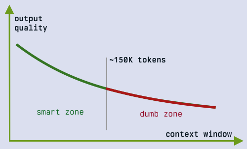

Beyond the Dumb Zone¶

Keeping Decision History While Independently Reviewing AI-Assisted Software Development¶
Volkan Özçelik / September 12, 2026
A research-informed workflow for persistent implementation, independent review, and explicit human approval.
Should You Reset Before Writing Code?
An agent and a developer spend hours debating a feature. They clarify the problem, reject plausible alternatives, discover that an early assumption was wrong, and agree on the intended experience. They turn that discussion into a specification intent, then a complete specification and implementation plan.
The session now contains 250,000 tokens in a million-token context window.
Should they reset it before writing code?
A familiar answer is yes: the conversation is approaching the model's "dumb zone".
Start clean, load the specification, and implement with an uncluttered context.

The folk model: schematic, not measured data. Context-related degradation is documented, but its shape and severity depend on the model, task, and input. The threshold shown is illustrative, not an established restart boundary.
But consider what the reset removes:
The history explains why the obvious design was rejected. It records which constraint actually matters, which requirement was deliberately narrowed, and why a seemingly unnecessary exception exists. The agent has access to the reasoning that produced the specification, including details the final document may not fully express.
A fresh session may have less interference. It may also have less understanding.
This article argues for a different default for substantial, closely related work: retain the informed implementer and persistent reviewers, establish explicit authority for current decisions, and use independent evidence-based review at defined stages. Resetting remains an available intervention. Context occupancy alone is insufficient grounds for invoking it.
The distinction matters. Long-context degradation is a real research finding. A universal token count at which every software-development session should restart is not established by the research discussed here.
The workflow below is an engineering proposal grounded in that research and in an existing practitioner process. It is not a controlled experimental demonstration that persistent sessions outperform every alternative. Its central hypothesis is testable: when decision history remains valuable, preserving it while independently checking the resulting artifacts can produce better accepted work than discarding it at an arbitrary threshold.
What Does "Attention Degradation" Cover In Reality?¶
People use "context rot", "attention degradation", and "smart zone / dumb zone" to describe several different problems. Those labels are convenient, but they can obscure which intervention would help.
| Failure mode | What it looks like in development | Why the distinction matters |
|---|---|---|
| Retrieval failure | The agent overlooks a constraint that remains in the conversation. | The information exists, but is not used reliably. |
| Conflicting history | An abandoned proposal competes with its approved replacement. | The agent needs to resolve authority and supersession. |
| Anchoring | The agent keeps repairing a design built on a disproven assumption. | More repetition of the same reasoning may preserve the mistake. |
| Handoff loss | A replacement agent follows the spec but misses a consequential rationale. | Resetting can introduce a new failure. |
| Version confusion | A reviewer evaluates code against an obsolete contract. | Correct recall of old information is still the wrong basis for judgment. |
| Evidence failure | Everyone accepts an implementation claim without inspecting behavior. | A shorter context does not supply missing verification. |
These are behavioral categories for operating the workflow, not diagnoses of a model's internal mechanism. A missed requirement does not, by itself, prove that a particular attention head failed or that a context-length threshold was crossed.
Three concepts also need separation. The model processes the input it receives. The harness assembles that input, manages tools, and may summarize or remove material. The agent is the resulting system carrying out the task. Improved behavior can come from any combination of those layers.
That is why a session's visible length is a weak standalone measure of its likely quality. We also need to know what the input contains, how current instructions are distinguished from history, what evidence is available, and what the agent must do next.
What the Research Establishes, and What It Leaves Open¶
Position and Task Structure Matter¶
Liu and colleagues' Lost in the Middle studied multi-document question answering and key-value retrieval. Performance often depended on where relevant information appeared, with stronger results near the beginning or end than in the middle. The study establishes a limitation in reliable use of available context for the tested models and tasks. It does not identify a universal software-development restart threshold. Liu et al., 2023
RULER broadened evaluation beyond finding a single hidden item. Its tasks include multiple needles, multi-hop tracing, and aggregation. Models that performed well on a simple retrieval test could still degrade on more demanding long-context tasks. The implication is methodological: advertised capacity and one successful retrieval benchmark are insufficient descriptions of effective context use. Hsieh et al., 2024
Chroma's Context Rot report evaluated 18 models using controlled tasks, including retrieval variations, conversational memory evaluation, and repeated-word reproduction. It found nonuniform performance as input length increased and examined the effects of distractors, semantic similarity, and input structure. This is stronger evidence than anecdotes that longer input can create problems, even when the task remains simple. It is still not an experiment comparing the complete development workflows proposed here. Hong, Troynikov, and Huber, 2025
The practical consequence is that "all of this history is relevant" is an argument for its potential value, not proof that the model will use it correctly. Relevant but obsolete proposals can be particularly difficult to distinguish from current ones.
Multi-Turn Problems Include Premature Commitments¶
Laban and colleagues compared single-turn and multi-turn settings across six generation tasks, analyzing more than 200,000 simulated conversations. They reported an average performance drop of 39% in the multi-turn setting and identified reliance on early assumptions and premature solutions as an important failure pattern. That number describes their experimental setup; it is not a prediction that a long coding session loses 39% of its quality. Laban et al., 2025
For the workflow in this article, the relevant concern is whether incorrect premises remain active after correction. A staged process that explicitly ratifies decisions and reviews artifacts is materially different from simply accumulating turns, although the cited study does not measure how much those controls help.
Long-Context Capability Has Improved¶
Historical findings should not be converted into permanent numerical ceilings. In its February 2026 Opus 4.6 announcement, Anthropic reported 76% on the eight-needle, million-token MRCR v2 evaluation, compared with 18.5% for Sonnet 4.5. This is a vendor-reported comparison between particular models on a particular evaluation. It supports improvement in long-context retrieval, not a claim that extended implementation is solved. Anthropic, 2026
Claims that the "dumb zone" moved from 100K to 200K tokens need similar qualification. Which model? Which harness? Which task? Which failure criterion? Was the history a coherent design discussion, a repository dump, or thousands of lines of repetitive logs?
Neither number is established here as a general cutoff. Conversely, using only 25% of a million-token window does not certify reliability. Capacity and useful performance are different measurements.
Anthropic's context-engineering guidance itself describes degradation as a gradient rather than a hard cliff and recommends selecting sufficient, high-signal information. That guidance is compatible with preserving substantial useful history; "minimal" need not mean short. Anthropic, 2025
Independent Feedback Is Promising, but Agreement Is Not Proof¶
Du and colleagues found benefits from multiagent debate on the factuality and reasoning tasks they studied. This supports investigating multiple perspectives as a technique; it does not validate this exact three-reviewer software process or establish three as an optimal number. Du et al., 2023
Research on LLM judges also identifies position, verbosity, and self-enhancement biases. Its preference-evaluation setting differs from code review, but it gives a concrete reason to avoid treating a model's favorable judgment as an objective measurement of correctness. Zheng et al., 2023
Finally, research on intrinsic self-correction found that models could struggle to improve reasoning without external feedback, sometimes making it worse. This is not a timeless claim about every newer model or about tool-assisted repair. It does support distinguishing a request to "think again" from feedback grounded in additional evidence. Huang et al., 2024
Taken together, these sources motivate a process that preserves useful information, resolves conflicting authority, and introduces independent checks. They do not demonstrate that any one context-management policy is universally best.
Resetting Context Can Lower Quality, Too¶
A specification is a deliberate selection of information. It states what should be built and the constraints governing that work. The preceding conversation often contains more: counterexamples, rejected approaches, conditional reasoning, and the circumstances under which a decision should be reconsidered.
Consider a fictional command-line tool that installs reusable workflows.
The first proposal says installations should update automatically. During debate, the developer explains that a selected version must remain reproducible. The team rejects automatic updates, decides that checking for updates is allowed, and requires explicit selection before the installed version changes.
The final specification says:
Installation versions are pinned. Updates require explicit user action.
That is a useful requirement. But the history also clarifies why an "update available" notice is acceptable while changing the executable payload is not. It may explain what happens when a registry is unreachable and whether a failed update can disturb the current installation.
A persistent implementer can use that rationale when encountering an unanticipated edge case. A fresh implementer may have to rediscover it, ask the developer again, or choose an interpretation that is locally plausible but inconsistent with the original intent.
This does not justify keeping binding requirements only in conversation. If an edge case affects acceptance, it belongs in the approved artifacts. The point is that documents can be incomplete, and implementation frequently reveals questions that were not obvious during drafting.
The strongest process preserves both forms of information: an explicit current contract and access to the reasoning behind it.
Continuity Is Not Authority
There is a corresponding danger. If the persistent agent silently implements a remembered promise that never reached the approved spec, the code can diverge from the review baseline. Continuity helps identify the gap; it does not authorize bypassing it. The gap should become a proposed amendment, approved before it changes scope.
Think of a specification as the agreed design and the conversation as the design notebook. The notebook can explain the design. It can also contain crossed-out designs. Keeping the notebook is useful only if the team knows which drawing it has approved.
Continuity Matters More than Context Window Size¶
The proposed policy is simple:
Keep the implementation and review sessions while their history remains useful. Establish the approved artifact versions at each stage. Use evidence-based review to correct mistakes. Restructure or reset context in response to a concrete need.
This policy makes three separate commitments.
First, continuity is allowed across planning, specification, implementation, and repair. The implementer does not have to forget the design discussion when the task changes phase.
Second, conversational recency is not the project's authority system. Approved specifications and explicit amendments govern the work. Earlier discussion informs interpretation. Conflicts are surfaced, not silently settled by whichever sentence happens to attract the model's attention.
Third, implementation ownership and review judgment are separated. The agent that writes the work responds to findings, but does not unilaterally declare the next stage open.
A short baseline note at each transition makes this operational. It identifies the approved artifact, current decisions, superseded assumptions, unresolved questions, and the next permitted activity. Its purpose is navigation and reconciliation. It need not replace the history or summarize every turn.
Roles in the Persistent Review Workflow¶
The workflow presented here for ctx adapts an existing practitioner
process that prioritizes "continuity" over rule-of-thumb context cutoffs.
This is a public adaptation, not a claim that its benefits were measured
while developing ctx.
The proposed setup uses one implementation agent, three reviewer perspectives, and a human decision-maker.
The policy is to keep the same agent conversations across stages rather than reset them at an arbitrary token threshold. Harnesses may compact their inputs; consequential decisions remain in durable artifacts. Persistence is the intended review setup, not a verified account of every external reviewer's session history.
| Role | Responsibility | Boundary |
|---|---|---|
| Human product owner | Decide product tradeoffs, coordinate artifact transfers, approve each stage, accept residual findings. | Model agreement does not replace approval. |
| Implementation agent | Inspect its checkout, author planning and specification artifacts, implement approved work, validate it, and record responses to findings. | Stop at every agreed gate; do not silently expand scope. |
| External reviewer A | Independently critique the stage artifact using its retained history and available evidence. | Report evidence and uncertainty; do not assume access it lacks. |
| External reviewer B | Provide another model perspective under the same review contract. | Do not defer to A's conclusions. |
| Persistent steering reviewer | Preserve product intent, inspect revised artifacts and code, reconcile findings with decisions, and steer further correction. | Reconsider its own prior advice when evidence contradicts it. |
"Oracle" is a convenient role name, not a claim of infallibility. These reviewers generate hypotheses, identify contradictions, inspect evidence, and suggest corrections. Their claims remain reviewable.
Different frontier models are intended to broaden perspective. That choice does not establish statistical independence: they may share training influences, conventional assumptions, or blind spots.
Persistent reviewers also acquire a shared project history over time. The safeguards below focus on how judgments are formed and tested.
The Five Stages and Their Hard Stops¶
The workflow can use any suitable specification tools. In this public
adaptation, /ctx-plan produces a debated brief,
/ctx-spec produces a specification intent, and a
specification engine produces the full bundle. These command names
describe the adaptation. GitHub Spec Kit is one available toolkit for
specification-driven development; this
article's complete review protocol is an additional operating
procedure. GitHub Spec Kit
Stage 1: Debate the Problem¶
The developer and implementation agent examine the problem before committing to a design. The resulting brief explains the intended experience, constraints, alternatives, failure modes, validation approach, and open decisions.
Reviewers should ask whether the problem is correctly framed, whether proposed complexity follows from actual needs, and whether an attractive option was dismissed without sufficient evidence. They should identify hidden assumptions and ask what would disprove them.
The agent stops before creating the specification intent. A finished brief is not permission to proceed. The human approves advancement after findings have been addressed or explicitly accepted.
Stage 2: Establish the Specification Intent¶
The agent converts the approved debate into a document that separates settled requirements from proposals, assumptions, and unresolved choices.
Review concentrates on information preservation. Did a conditional preference become a mandatory requirement? Did a rejected approach return through different wording? Did an important exclusion disappear? Does every consequential ambiguity have an owner and a path to resolution?
The intent should be structured enough to guide a specification engine without pretending that open decisions are settled. The agent stops before that handoff.
Stage 3: Review the Full Specification Bundle¶
The next artifact includes the specification, design or plan, contracts, tasks, and consistency analysis appropriate to the project.
Review the complete bundle together. An individually reasonable task list can contradict a contract. A design can satisfy the feature description while violating an operational constraint. A test plan can verify examples without covering the required failure behavior.
Reviewers should trace consequential requirements through the proposed design and validation approach. The human approves the bundle version before implementation begins.
This stage is particularly important because three reviewers examining code against an incomplete specification can all miss the same lost requirement. Reviewing the transformation from intent to bundle helps expose that loss earlier.
Stage 4: Implement the Approved Bundle¶
The implementation agent continues in its established session. It writes code, tests, documentation, and validation evidence against the approved baseline.
When implementation exposes an ambiguity, the agent records it. A local implementation choice within the approved design can be resolved normally. A change to product behavior, a binding constraint, or an approved contract returns for explicit decision.
The agent stops with a complete implementation package. Review checks both specification compliance and the intended developer experience. Reviewers inspect actual source and behavior where their tools permit; an author's summary is only a starting point.
For work with an expensive architectural uncertainty, insert an optional review after the first meaningful implementation slice. This is a risk-based checkpoint, not a context reset. It is unnecessary for every bounded change.
Stage 5: Converge Through Verified Corrections¶
The agent evaluates findings, makes justified corrections, updates evidence, and stops again. Reviewers verify those corrections and inspect affected behavior for regressions.
Completion requires explicit human acceptance. Unresolved findings remain visible, including their impact and the reason they are accepted or deferred. Copying work to another environment, opening a pull request, publishing, or deploying remain separate actions governed by the permissions of the project. Acceptance of an implementation does not implicitly authorize every downstream action.
The Review Loop, Step by Step¶
At each checkpoint, use the following sequence.
- Freeze the candidate. The implementation agent identifies the artifact version or commit, supplies the supporting evidence, and stops.
- Obtain two separate critiques. The human submits that candidate to external reviewers A and B. Each records its findings before seeing the other's current conclusions.
- Evaluate the feedback. The implementation agent assesses each finding, revises where justified, and records dispositions. Feedback is not automatically a requirement.
- Synchronize the revision. The human transfers the exact revised artifact and relevant evidence into the steering reviewer's workspace.
- Review the revised candidate. The steering reviewer inspects it against requirements, prior decisions, source, and evidence. Where practical, provide a clean copy of the revised artifact, with review dispositions available separately. It forms its initial findings before reading those conclusions, then performs reconciliation.
- Correct and verify. The agent addresses findings and stops. Material revisions may return to the external reviewers. Repeat until the completion criteria are met.
- Approve the next stage. The human explicitly authorizes advancement. A favorable review never opens the gate automatically.
This deliberately combines two early critiques with a later review of the revised work. It should be described accurately: it provides three perspectives, but the third perspective is examining a later candidate. If prior reviewers' verdicts or their dispositions remain inline, the third reviewer sees those conclusions during its initial read. Its reasoning can still add value, but that read is not blind to the earlier reviews. Separating dispositions where feasible reduces this exposure; the revisions themselves still reflect earlier feedback.
For an experiment that measures reviewer agreement, give all three reviewers the same frozen artifact before any revisions. For day-to-day engineering, sequential review can be preferable because the later reviewer checks what actually changed. Neither arrangement requires erasing prior project context.
Independence Without Amnesia¶
Independent review is often conflated with a fresh session.
They are not: They are different properties.
A reviewer can remember the entire product discussion and still derive its current findings without copying another reviewer's conclusions. Conversely, a fresh reviewer can be strongly anchored by an implementation summary that explains why the code is supposedly correct.
The useful separation is between shared facts and shared verdicts. Reviewers should receive the same authoritative requirements, current decisions, and candidate version. They should first reach their own conclusions about the current candidate. After that, sharing findings is desirable: it allows errors to be challenged and omissions to be discovered.
Persistent reviewers can contribute a form of continuity that fresh reviewers lack. They can recognize that a newly proposed "simplification" reintroduces a previously rejected failure mode. They can also become attached to recommendations they helped create.
Make that vulnerability explicit in their instructions: earlier advice is revisable. When a defect is found, classify whether it belongs to the implementation, the specification, a prior assumption, or the review itself. Do not force every problem into "the implementer failed to follow the plan." Sometimes the plan is wrong.
Evidence Outweighs Votes
Avoid majority voting as the primary resolution method. One reviewer with a reproducible counterexample can outweigh two reviewers who found no issue. Three reviewers repeating the same unsupported concern do not turn it into evidence.
The purpose of multiple perspectives is to improve the search for defects and alternative interpretations. Resolution still depends on reasoning, evidence, and product authority.
The Reviewable Package¶
Long conversations become easier to use when the current state is explicit. A lightweight checkpoint package should include:
- The stage, candidate identifier, and approved baseline it derives from.
- The artifacts under review, including exact code revision where applicable.
- Current decisions, superseded assumptions, and unresolved questions.
- A change summary relative to the previous reviewed version.
- Validation commands, relevant environment information, outcomes, and known gaps.
- Findings and dispositions from earlier rounds, available for reconciliation.
- The action currently authorized and the action that still requires approval.
Keep the package proportional to the work:
A small change can use a single Markdown file plus a commit. A large specification bundle may need an index. There is no benefit in generating elaborate tracking material that nobody reads.
The history remains available as supporting context. The package tells participants where current authority resides.
Example Checkpoint Record¶
stage: implementation-review
candidate: <exact-commit-sha>
approved_spec: <spec-bundle-version>
decision_record: <decision-record-version>
authorized_action: address findings within approved scope
next_gate: human acceptance of implementation
validation:
- command: <exact-command>
environment: <relevant-runtime-and-platform>
result: <pass-fail-or-blocked>
known_gaps:
- <behavior-not-yet-verified>
These are illustrative fields, not a tool-specific schema. Fill them with actual evidence. A command that the agent suggests running is different from a command it ran, and both are different from a command a reviewer reproduced independently.
Example Finding Record¶
ID: R-017
Candidate: <exact-commit-sha>
Category: defect
Impact: failed update can remove the working installation
Requirement: REQ-12; approved decision D-04
Evidence: <code location and failing reproduction>
Expected: prior installation remains usable after update failure
Observed: prior installation is removed before replacement succeeds
Requested action: preserve the prior installation through failure
Disposition: accepted
Correction: <correcting-commit-sha>
Verification: <reproduction now passes; affected checks and results>
Status: verified
A useful finding explains an observable problem. It does not need to prescribe the entire implementation. Allow the author to choose a sound correction within the approved constraints.
Use dispositions such as accepted, rejected with evidence, duplicate, deferred with approval, or awaiting a product decision. "Fixed" should identify a correction. "Verified" should identify the evidence that the correction works.
Review the Behavior, Not Just the Documents¶
The fictional pinned-version installer illustrates the difference between compliance language and observable behavior.
The implementation may contain a confirmation prompt and therefore appear to satisfy "updates require explicit action." But perhaps invoking a read-only listing command refreshes a cache that replaces the installed payload. The prompt exists, tests pass, and the intended guarantee is still broken.
A reviewer should inspect the paths that can change the installation, then exercise the relevant scenario. It should ask whether an update failure preserves the previous working state, whether an offline operation behaves as intended, and whether a normal user can tell which version will execute.
The exact tests depend on the feature. The general review questions are reusable:
- Does the behavior satisfy the approved requirement?
- Does it preserve the constraint that motivated that requirement?
- Does it behave correctly on the failure paths that matter?
- Can the intended user complete the task without hidden assumptions?
- Is the available evidence sufficient to answer those questions?
Tests authored alongside an implementation may reproduce the same interpretation error. Reviewers should derive at least the consequential checks from requirements and failure scenarios rather than merely read test names. Where appropriate, they can add a counterexample, exercise an integration boundary, or inspect an invariant directly.
A reviewer without execution access should say that its review is static. A reviewer that receives only a diff should state what repository context is missing. Review coverage is a fact to report, not something to imply through confident language.
Preventing Drift and Endless Convergence¶
Repeated review can improve an artifact. It can also produce unnecessary churn or normalize an incorrect design. The workflow needs explicit stopping and reopening rules.
Classify comments before acting on them. A defect violates an approved expectation or exposes an actual failure. A scope question requires a product decision. An optional improvement may be worthwhile later. A style preference is not automatically a blocker.
Finish a stage when blocking findings are resolved or explicitly accepted, the relevant acceptance criteria have supporting evidence, corrections have been checked for affected regressions, and the human approves the candidate. Reviewers may retain documented reservations; universal enthusiasm is not required.
Reopen affected approvals after material changes. If a correction alters a public contract, it may require renewed specification review. If it only repairs an implementation branch to meet the existing contract, targeted verification may suffice. Judge the affected behavior and assumptions rather than mechanically rerunning every review.
Record important rejected findings, too. Otherwise a later reviewer may reopen the same concern without recognizing the evidence that settled it. Preserve the possibility of reconsideration when new evidence appears.
If review rounds produce contradictory requests, repeatedly change the same decision, or stop yielding meaningful evidence, pause the loop. Identify the disputed assumption and ask what observation or product decision would resolve it. Another general request to "review again" may only generate more prose.
When to Keep, Restructure, or Reset Context¶
The policy is conditional:
Persistent context is useful while it supports reliable work. \
It is NOT a commitment to retain every token under all circumstances.
| Observed situation | First response | When a reset or handoff becomes reasonable |
|---|---|---|
| The agent uses current decisions correctly and produces verifiable progress. | Continue. Keep current artifacts identifiable. | No reset is justified solely by occupancy. |
| An obsolete proposal reappears. | Point to the current decision and explicitly mark supersession. | The agent repeatedly returns to the obsolete premise despite correction. |
| The session contains large amounts of reproducible logs or obsolete source snapshots. | Use targeted retrieval and available pruning or compaction controls. | The harness cannot maintain a usable input and a prepared handoff is more reliable. |
| Reviewers disagree because they examined different versions. | Synchronize the exact candidate. | Resetting is unnecessary unless other problems remain. |
| Implementation repeatedly fails the same clear invariant. | Inspect the failed assumption and require a concrete reproduction. | A fresh implementer or focused diagnostic session can test another interpretation. |
| The project moves to an unrelated task. | Prepare the relevant state for that task. | Historical detail adds little useful information. |
| Context limits or compaction threaten necessary history. | Preserve decisions, evidence, and retrieval pointers explicitly. | Continue from a verified handoff if needed. |
An uninterrupted conversation does not guarantee that every original token reaches the model. Harnesses can manage long conversations through compaction; Anthropic documents this explicitly. Record relevant compaction events when evaluating the process, and keep consequential decisions in durable artifacts even when no manual reset occurs. Claude context-window documentation
A prepared handoff should contain the approved baseline, decision rationale, superseded assumptions, current code version, verification state, open findings, and next authorized action. If that handoff is sufficiently complete, a fresh session may work very well. The argument against arbitrary resets is not an argument against good handoffs.
An optional fresh reviewer can also be useful for a narrow question: "Does this contract make sense on its own?" or "Can a developer follow this installation guide without the debate?" That tests artifact self-sufficiency while persistent reviewers continue checking historical fidelity.
The Economics: Accepted Work Is the Unit That Matters¶
Three persistent reviewers, repeated revisions, and human coordination consume time and money. The relevant question is whether they prevent enough defects, misunderstanding, and rework to justify that cost for the task.
A useful accounting boundary is:
This is an accounting structure, not a measured result. The final term is often hardest to estimate. Report what is observed and avoid inventing savings for hypothetical defects.
Track model charges across all participants, tool and infrastructure costs when material, elapsed time, and active human minutes. Track accepted results and failures, not only tokens per successful response. A workflow that creates cheaper drafts but requires repeated reconstruction of intent may cost more to finish. A workflow that spends heavily on reviews of a trivial change may simply be wasteful.
Caching can change billing without establishing semantic reliability. Likewise, a shorter context can lower input cost without improving the final result. Read actual usage records and pricing for the environment in use rather than infer cost from the visible conversation length.
The full process is most defensible when requirements are ambiguous, design mistakes are expensive, or the feature crosses important contracts. Mechanical edits and isolated, readily testable fixes may justify fewer checkpoints. Three reviewers are a concrete configuration of this workflow, not a universal minimum for responsible development.
How to Test Whether the Approach Is Better¶
A practitioner can reasonably prefer this process before running a formal study. A claim that it is broadly superior needs a comparison that separates continuity from handoff quality and review effort.
Start from the same repository state and approved specification checkpoint. Compare at least these implementation conditions:
| Condition | Implementer input | What it helps measure |
|---|---|---|
| Persistent session | Existing debate, decisions, artifacts, and current implementation instructions. | Value and cost of accumulated history. |
| Fresh session with full handoff | Spec, decision rationale, exclusions, superseded assumptions, and relevant repository access. | Whether curated state can preserve the useful information. |
| Fresh session with spec only | Approved specification and normal repository access. | Practical loss when relying on the spec alone. |
Hold the downstream review procedure constant for the primary comparison. Otherwise, a persistent implementer with three reviewers versus a fresh implementer without review measures several changes at once.
Use multiple tasks and repeated runs where affordable. Include both decisions that depend on historical rationale and tasks whose specification is self-sufficient. Fix model versions and record harness configuration, reasoning settings, tool permissions, context construction, and compaction behavior. When those cannot be fixed, report the variation.
Predefine acceptance criteria and evaluation checks before examining the results. Where practical, have a final evaluator inspect anonymized artifacts without knowing which condition produced them. Keep those evaluation checks separate from the implementer's own tests. Account for human learning across runs: a coordinator who sees the first solution may unintentionally steer the second more effectively.
Useful outcome measures include acceptance rate within budget, consequential defects remaining at evaluation, requirements omitted or misinterpreted, accepted review findings, false-positive review burden, revision rounds, human effort, total cost, and elapsed time. Include unsuccessful runs; reporting only the cost of successful tasks hides an important part of the tradeoff.
A second experiment can compare persistent and fresh reviewers while holding implementation artifacts constant. A third can compare one versus three reviewers. These isolate whether gains come from retained context, review diversity, extra inference effort, or the human's coordination.
The strongest result may be conditional: persistence helps most when unresolved implementation choices depend on accumulated rationale, while a complete handoff works just as well for stable, explicit contracts. That would be a useful finding rather than a failure to discover a universal winner.
A Reusable Operating Contract¶
The following instructions condense the procedure into something a team can adopt. The baseline and candidate placeholders must be filled at each checkpoint.
For the Implementation Agent¶
Own the planning artifacts, specification, implementation, and validation.
Retain the useful project history across stages.
Current stage: <stage>
Approved baseline: <artifact version or commit>
Candidate under review: <artifact version or commit>
Authorized action: <specific activity>
Next approval gate: <gate>
Use the approved baseline and approved amendments as the current contract.
Use earlier discussion as rationale. Surface conflicts or missing binding
requirements; do not silently resolve them by changing product scope.
At each checkpoint, produce the artifact and supporting evidence, then stop.
Evaluate feedback rather than accepting it automatically. Record each
material finding's disposition and the evidence supporting that decision.
After corrections, identify the new candidate and update validation evidence.
Do not treat artifact completion or favorable review as approval to advance.
For Each Reviewer¶
Review the exact candidate against the approved requirements, current
decisions, intended user experience, and available source and evidence.
Retain useful history, including reasons for rejected alternatives.
Form your initial current-round findings before reading other reviewers'
current conclusions where the review sequence permits. Then reconcile.
Report concrete defects, scope questions, and optional improvements
separately. For a defect, identify impact, evidence, the violated expectation,
and a reproduction or verification method where possible.
Reconsider your own earlier recommendations when evidence contradicts them.
Distinguish implementation defects from specification defects and invalid
assumptions. Do not invent new scope as a review fix.
State review coverage and limitations. Do not claim checks you did not run.
Verify corrections against the revised candidate and inspect affected
behavior for regressions. Leave unresolved findings explicit.
For the Human Coordinator¶
Maintain one identifiable current candidate per checkpoint. Transfer exact versions, preserve the review record, decide product questions, and approve stage transitions explicitly. Require evidence for consequential claims, including claims made by reviewers. When a concern remains unresolved, accept it consciously or keep the gate closed.
These instructions do not eliminate judgment. They give that judgment a stable structure.
Conclusion¶
Long-context degradation is a legitimate engineering concern. The research shows that models can struggle with information placement, increasing input length, competing details, and assumptions accumulated across turns. Newer results also show that capability can improve substantially. Neither observation establishes a universal token count at which a coherent development session should restart.
A design conversation contains potentially valuable information: reasons, exclusions, failed alternatives, and the conditions behind decisions. Resetting can reduce interference, but it can also discard that information. The right comparison is between the reliability of retained history and the completeness of a prepared replacement context.
For substantial specification-driven work, a defensible approach is to preserve the informed implementer and persistent reviewers, make current authority explicit, review exact artifact versions, require concrete evidence, and retain human control over stage transitions. Multiple models broaden the search for problems; their agreement does not prove correctness. Tests and code inspection provide evidence; their coverage still needs examination.
The proposed workflow pays for continuity and repeated scrutiny with additional model use and human coordination. Whether that investment is worthwhile depends on the work and should ultimately be measured through accepted outcomes, defects, rework, time, and cost.
If You Remember One Thing from This Post...
Keep the context when it helps. Repair its organization when authority becomes unclear. Prepare a handoff when a fresh session serves the task better. Let observed behavior and verified results determine the intervention.
Where This Connects¶
This post argues against one reflex; earlier field notes covered the surrounding terrain.
- The Attention Budget explained why more context is not automatically better. This post is the other half of that argument: less context is not automatically safer, and the token count alone does not tell you which situation you are in.
- The Cheapest Patch Was the Most Expensive measured accepted-patch cost across seven runs. The accounting boundary in The Economics: Accepted Work Is the Unit That Matters is the same lens, applied to the reset decision instead of the model choice.
- Context as Infrastructure made the case that decision history should be durable rather than conversational. The baseline note and checkpoint package here are that idea at checkpoint granularity.
- Code Is Cheap. Judgment Is Not. separated production from judgment. The Review Loop, Step by Step is a structure for that judgment: the reviewers search for defects, but the human still opens the gate.
In tool form, ctx ships the first two stages: Scrutinizing a
Plan is the debated brief, and Design Before
Coding walks the brief through spec and implementation.
The review protocol above is what wraps around them.
References and Further Reading¶
The sources below support specific parts of the argument. None evaluates the complete workflow in this article. Publication years refer to the cited research or release; product documentation is a living source consulted for this article on September 12, 2026.
-
Nelson F. Liu et al. (2023). Lost in the Middle: How Language Models Use Long Contexts. Research on the effect of relevant-information placement in long-context question answering and retrieval. Useful for understanding why presence in context does not guarantee reliable use.
-
Cheng-Ping Hsieh et al. (2024). RULER: What's the Real Context Size of Your Long-Context Language Models?. COLM 2024. A broader synthetic evaluation covering retrieval variations, tracing, and aggregation. Useful for distinguishing nominal window size from performance on demanding tasks.
-
Kelly Hong, Anton Troynikov, and Jeff Huber (2025). Context Rot: How Increasing Input Tokens Impacts LLM Performance. Chroma technical report, July 14, 2025. Controlled experiments on input length and context composition. The authors provide replication code and experiment materials.
-
Philippe Laban et al. (2025). LLMs Get Lost In Multi-Turn Conversation. A simulated comparison of single-turn and multi-turn task specification. Relevant to premature assumptions and difficulty recovering from earlier solutions; not a direct coding-session threshold study.
-
Anthropic (2026). Introducing Claude Opus 4.6. February 5,
-
Primary vendor source for the cited MRCR v2 comparison. Read its benchmark claims as model- and evaluation-specific evidence.
-
Anthropic (2025). Effective Context Engineering for AI Agents. September 29, 2025. Engineering guidance on context selection, retrieval, compaction, and structured memory. Guidance rather than a controlled test of this article's process.
-
Yilun Du et al. (2023). Improving Factuality and Reasoning in Language Models through Multiagent Debate. Research supporting investigation of multiple model perspectives, with different tasks and procedures from the workflow described here.
-
Lianmin Zheng et al. (2023). Judging LLM-as-a-Judge with MT-Bench and Chatbot Arena. NeurIPS 2023 Datasets and Benchmarks. Discusses model judges and biases relevant to interpreting automated judgments. Human-preference agreement should not be equated with software correctness.
-
Jie Huang et al. (2024). Large Language Models Cannot Self-Correct Reasoning Yet. ICLR 2024; initially posted in 2023. Examines intrinsic self-correction without external feedback. Useful for distinguishing unsupported reconsideration from correction informed by additional evidence.
-
Anthropic. Context Windows. Living platform documentation. Relevant to the difference between a continuing conversation and the actual context supplied to a model, including compaction.
-
GitHub. Spec Kit. Official repository and documentation for a specification-driven development toolkit. A possible tool for producing and implementing specification artifacts; the persistent multi-reviewer protocol in this article is an additional process.
This post is part of the ctx field notes series,
documenting what we learn building persistent context infrastructure
for AI coding sessions. The workflow described here is an engineering
proposal grounded in published research and an existing practitioner
process, not a controlled experimental result.